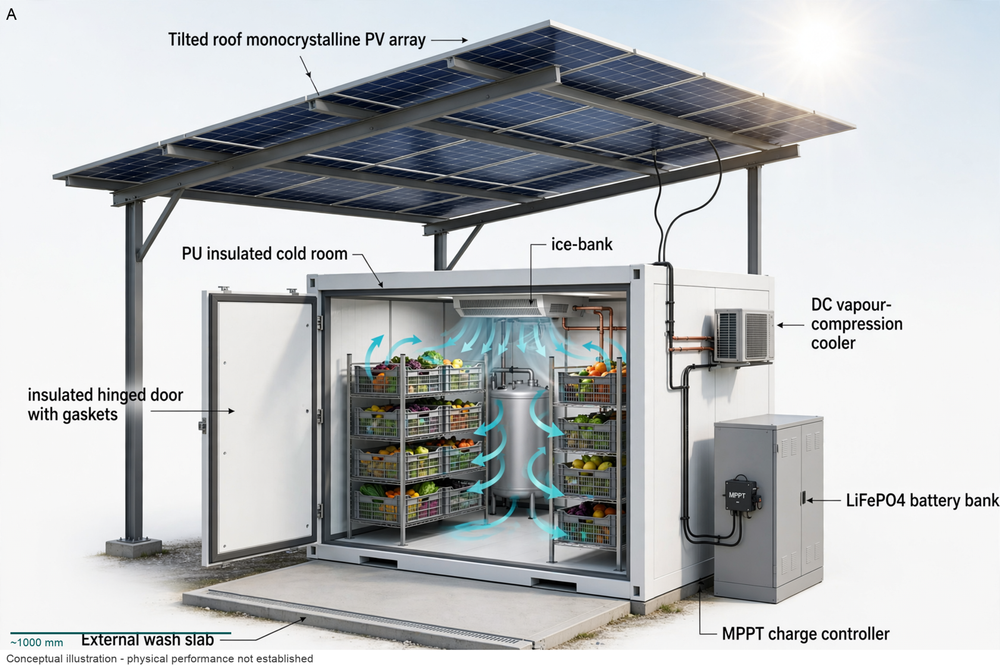

Hardware Scientist — concept report
Off-grid solar-powered cold storage for smallholder farmers
Smallholder farmers in hot regions without grid electricity lose a large share of their fruit and vegetables after harvest because they cannot keep them cool. Design an energy-efficient, solar-powered cold storage unit that a farming cooperative can use to keep fresh produce cool until it is sold.
- No grid electricity; solar energy only
- Store about 1 tonne of fresh produce
The concept

Flow view (the governing quantity, as decided by the council):

Sunlight on a tilted 4kW PV array with MPPT charges a 48V LiFePO4 bank that drives a DC vapour-compression cooler to hold a 100mm PU-insulated 10m3 room with twin racks of fifty vented crates at 4-6C, with a 100kg ice-bank carrying night load.
Energy: Tilted roof PV array -> 48V LiFePO4 battery bank -> DC vapour-compression cooler | Measured: MPPT charge monitoring -> Battery state monitoring
Three decisive design choices
- Retain 100mm PU cold room with vented PV shade roof and tight door seals
- Stage intake at 250kg per day over 4 days with 1.5kW cooling 0.6kW electric compressor duty
- Size 4kW tilted south PV with MPPT plus 48V 240Ah LiFePO4 near 11.25kWh plus 100kg ice-bank for night
What is combined battery-plus-ice autonomy in days when 9.28kWh thermal ice-bank (E23) is divided by COP 2.5?
What happened
References
- prior-art check — https://order.phaesun.com/docs/600529_DB_EN.pdf https://order.phaesun.com/docs/600529_DB_EN.pdf
Files
Run 20261101-165746_off-grid-solar-powered-cold-storage-for- · total cost $1.36 · conceptual illustration — physical performance not established.